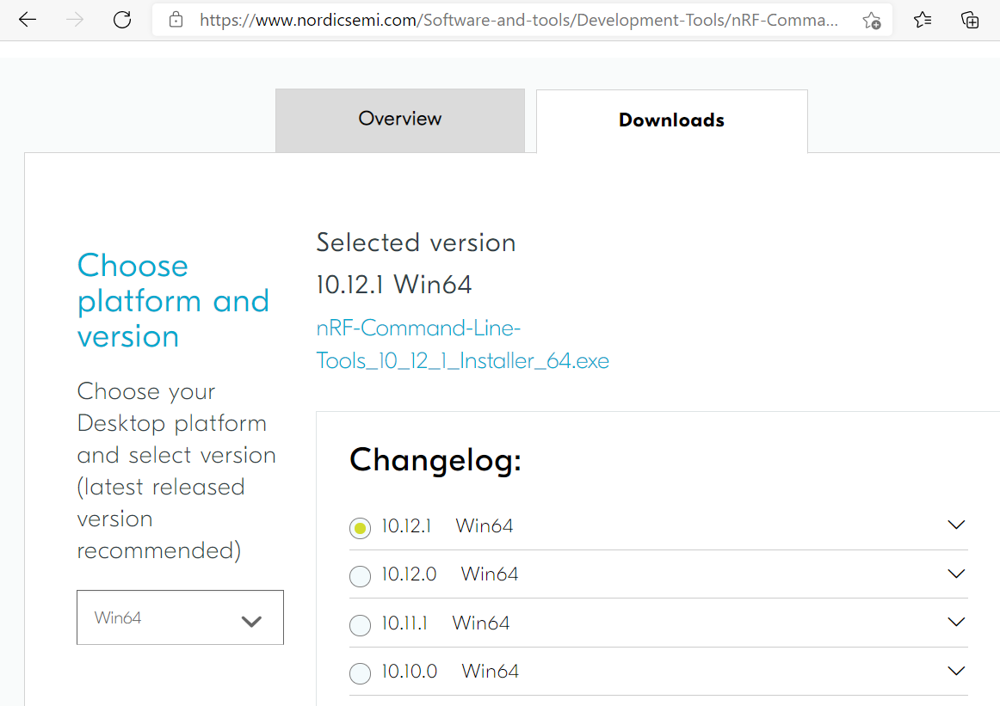
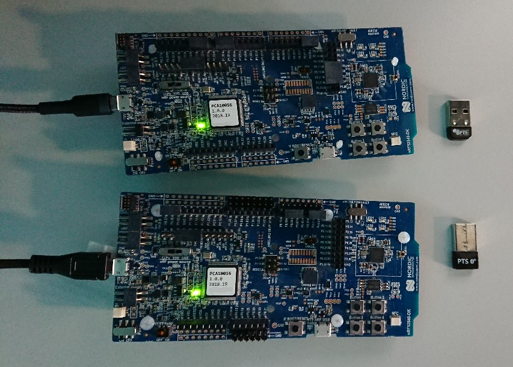
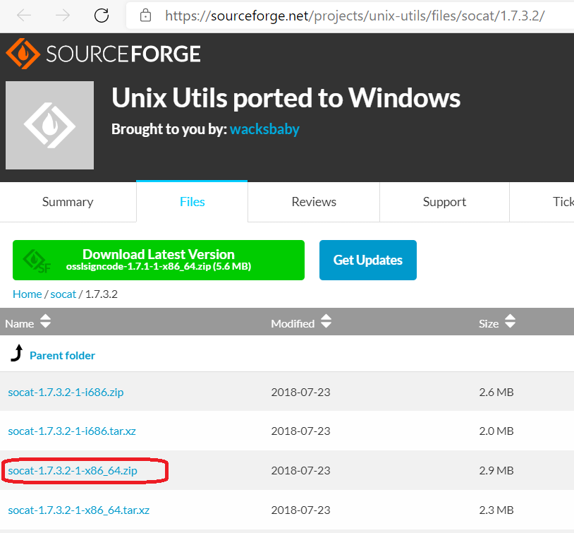
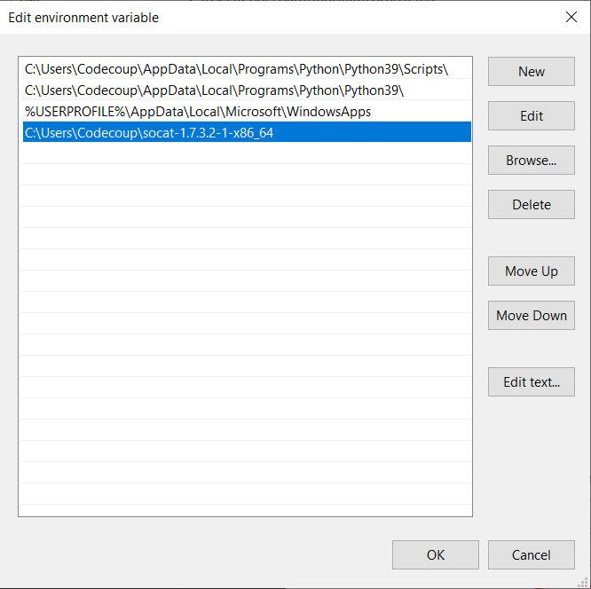

在 Windows 10 上使用 nRF52 开发板运行 AutoPTS
本教程介绍如何搭建 AutoPTS 客户端和服务器，使两者都运行在 Windows 10 上。由于 Zephyr SDK 尚不支持 Windows，我们仅使用 WSL1 和 Ubuntu 将 Zephyr 项目构建为 elf 文件。本教程只涵盖 nrf52840dk。
更新 Windows 和驱动
在以下位置更新 Windows：
开始 -> 设置 -> 更新和安全 -> Windows 更新
按照硬件厂商的说明更新驱动。
安装 Python 3
下载并安装 Python 3。本环境已在 3.8 及以上版本中测试。让安装程序将 Python 安装目录添加到 PATH，并禁用路径长度限制。


安装 Git
下载并安装 Git。安装时启用选项：Enable experimental support for pseudo consoles。我们将使用 Git Bash 作为 Windows 终端。

安装 PTS 8
从 https://www.bluetooth.org 安装最新的 PTS。记得从安装目录“C:/Program Files (x86)/Bluetooth SIG/Bluetooth PTS/PTS Driver/win64/CSRBlueCoreUSB.inf”安装驱动

备注
从 PTS 8.0.1 开始，不再包含 Bluetooth Protocol Viewer。因此，要捕获 Bluetooth 事件，需要单独下载它。
为 Windows 搭建 Zephyr 项目
按照 入门指南 完成 Windows 环境搭建。
安装 nrftools
在 Windows 上，从 https://www.nordicsemi.com/Software-and-tools/Development-Tools/nRF-Command-Line-Tools/Download 下载最新的 nrftools（10.12.1 或更高版本），并按默认选项安装。


连接设备



烧录开发板
在设备管理器中找到 nrf 开发板的 COM 端口。在本例中是 COM3。

在 Git Bash 中进入 zephyrproject
cd ~/zephyrproject
构建 auto-pts 测试器（tester）应用程序
west build -p auto -b nrf52840dk/nrf52840 zephyr/tests/bluetooth/tester/
可以使用以下命令显示烧录选项：
west flash --help
然后使用之前构建的 elf 文件烧录开发板：
west flash --no-rebuild --board-dir /dev/ttyS2 --elf-file ~/zephyrproject/build/zephyr/zephyr.elf
注意 west 不接受 COM 端口名，因此请使用 /dev/ttyS2 作为 COM3 的等价物、/dev/ttyS2 作为 COM3 的等价物，依此类推（/dev/ttyS + COM 编号减一）。
搭建 auto-pts 项目
在 Git Bash 中克隆项目仓库：
git clone https://github.com/auto-pts/auto-pts.git
进入项目文件夹：
cd auto-pts
安装所需的 Python 模块：
pip3 install --user wheel
pip3 install --user -r autoptsserver_requirements.txt
pip3 install --user -r autoptsclient_requirements.txt
安装 socat.exe
从 https://sourceforge.net/projects/unix-utils/files/socat/1.7.3.2/ 下载 socat.exe 并解压到文件夹 ~/socat-1.7.3.2-1-x86_64/。


将 socat.exe 所在目录的路径添加到 PATH：


运行 AutoPTS
服务器和客户端默认运行在 localhost 地址上。运行服务器：
python ./autoptsserver.py -S 65000

备注
如果在全新搭建后出现错误“ImportError: No module named pywintypes”，请卸载并重新安装 pywin32 模块：
pip install --upgrade --force-reinstall pywin32
运行客户端：
python ./autoptsclient-zephyr.py zephyr-master ~/zephyrproject/build/zephyr/zephyr.elf -t COM3 -b nrf52 -S 65000 -C 65001

首次运行时，如果 Windows 询问，请允许通过防火墙连接：

故障排除
“在实际硬件测试模式下运行时，只出现 BTP TIMEOUT。”
这是 auto-pts 客户端与开发板之间的连接问题，可能有多种原因。可以尝试：
使用以下命令清理 auto-pts 和 zephyr 仓库
警告
该命令会强制且不可逆地删除仓库中所有未提交的文件。
git clean -fdx
然后重新构建并烧录测试器 elf。
如果 Windows 安装在虚拟机上，请检查客户机扩展（guest extensions）是否已正确安装，或在虚拟机设置中将 USB 兼容模式改为 USB 2.0。
检查防火墙是否阻止了 python.exe 或 socat.exe。
检查开发板在重启后是否发送就绪事件（十六进制 00 00 80 ff 00 00）。使用 PuTTy 等工具，以正确的 COM 端口和波特率打开与开发板的串口连接。开发板复位后，应能在控制台中看到一些字符串。
检查 socat.exe 是否创建了到开发板的隧道。在控制台中运行
socat.exe -x -v tcp-listen:65123 /dev/ttyS2,raw,b115200
其中 /dev/ttyS2 等价于 COM3。打开 PuTTY，将连接类型设为 Raw，IP 设为 127.0.0.1，端口设为 65123。开发板复位后，应能在控制台中看到一些字符串。